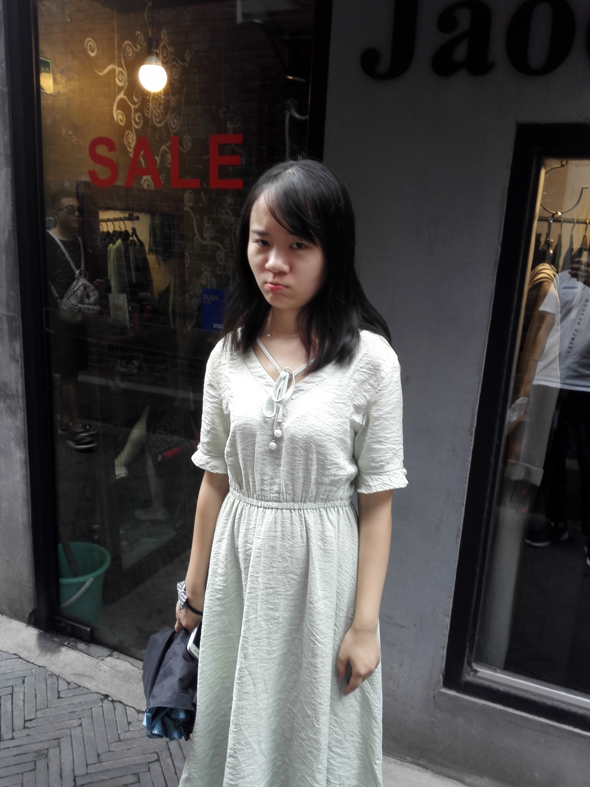
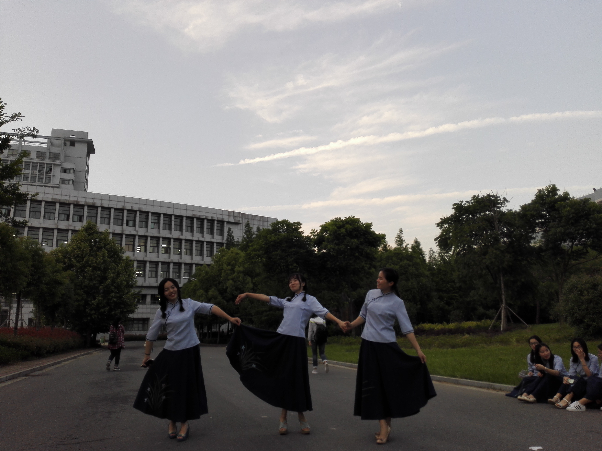

这是我们恋爱的第四年，也面临着毕业季，都说毕业季是分手季，一开始的我还不信，我觉得任何困难在我们四年感情基础面前一切都不是问题，可现在我才发现我真的是太天真了，也怪我自己的不争气，给不了你安全感，这段时间整理之前所有的材料的时候想起了很多之前的事情，原来人偶尔是需要往后看的，才知道之前的自己是多么的无知，是多么的不成熟，是多么的笨。人家都说男生会比较晚成熟，而你也一直在等待我的成熟，但是我做的每一件事好像都不成熟，也没有跟上你的脚步，然后我就掉队了，最后发展成了这样。其实不管是父母不同意、我的关心不够、我的不成熟等等这些原因，我都能理解，我也能站在别人的角度想问题，总结最后发现还是自己的问题。
左边的照片，应该是给你拍的毕业照当中我最喜欢的了，是不是还挺好看的，那个时候的你靠在我的肩膀上，我两一脸幸福的模样。真羡慕那时的我们。彼此就是全世界。
右边的照片中，你比着那经典的动作，我想那时的你心里想的是什么呢？ 是不是觉得我们能够一直走下去，对未来的生活充满了希望，对未来的我们也是信心满满。
"吸睛之空气刘海"

俏皮模样
左边的这张照片是你来上海跟你去的田子坊，给你拍照你嘟嘴的模样，好像是我没给你拍照你假装生气的模样抓拍你的照片，现在看着你嘟嘴的模样都是非常好看了，我还记得我们一起去找老大，还记得当时老大跟我们聊天的时候说要我们好好在一起，彼此好好珍惜这段感情，想不到这才过去一个月都不到，结局却是朝着相反的方向发展，让我猝不及防。
婀娜的舞姿
这张照片不知道你有没有。我还记得我先拍的毕业照，你跑来找我一起拍照，而我事先是不知道的，你给了我一个大大的惊喜，我相信你是想跟我一起经历这样一个圣神的时刻，而我也想跟你一起见证你毕业的那一天，而这个经历不是所有人都可以获得的，而我却是那个独一无二的人，陪在你身边的人，所以我一直待在学校一直没走，一直等到当班上的人都散的差不多的时候，你拍毕业照了，那天当了你一天的“职业”摄影师，虽然照片拍的不是特别好，但当时的我想着以后一定要改善我的拍照技术，还有买一台单反专门给你拍照片用，但到现在这个想法都还没实现，实在是....
"香遇"

看着你嘟嘴的模样，呆呆的样子，总忍不住想要上去摸摸你的脸，捏捏你的脸，看着这张照片，你来上海带你去游玩的情景还历历在目，就好像前两天才发生的事情一样，回过神来才知道那已经是很久之前的事情了，我还记得那个时候大夏天的带你骑小黄车，送你走的时候把你热的够呛，你说每次送你走的时候为什么不看着你走，你觉得我不在乎你，连看都不看你，我相信你应该懂得目送爱人走的感受吧，我还记得你从嘉兴走的时候，我把你送上电梯我就走了，头没回就走了，我想你应该不知道回去的路上，在公交车上我是什么情况吧~